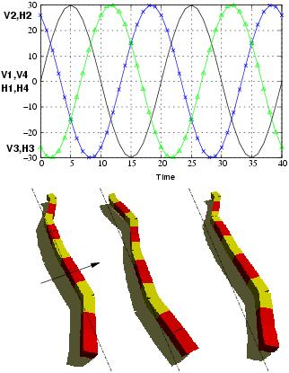

Next: 6 Locomotion areas Up: 5 Locomotion capabilities Previous: 4 Rotating gait


Next: 6
Locomotion areas Up:
5
Locomotion capabilities
Previous: 4
Rotating gait
Using this gait, the robot move
parallel to its body axis. A phase difference of 100 degrees is
applied both for the horizontal and vertical joints (Fig.
 ).
The orientation of the body axis does not change while the robot is
moving.
).
The orientation of the body axis does not change while the robot is
moving.
|
 |
|
Figure: Lateral shift gait. Eight different sinusoidal CPGs are used. A phase difference of 100 is used both for the horizontal and vertical joints |